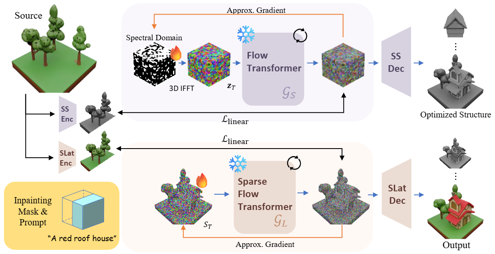

We present a training-free approach for controllable 3D inpainting based on initialization optimization in structured 3D latent diffusion models. While recent advances such as TRELLIS enable high-quality 3D generation, we observe that geometric structure is largely determined in the early stages of diffusion and is highly sensitive to the initial noise seed. In inpainting scenarios, this sensitivity leads to unstable geometry and inconsistent prompt alignment when relying solely on sampling trajectory manipulation. We instead refine the initial structured latent by imposing reconstruction constraints only on preserved regions, allowing masked regions to be synthesized by the pretrained generative prior. To enable stable and efficient optimization, we adopt memory-efficient approximate backpropagation based on a rectified flow formulation, structured basis parameterization for geometric components, and Gaussian regularization on the optimized seed. Furthermore, we exploit the early commitment of coarse geometry to perform reduced-step optimization, significantly lowering computational cost. Experiments on TRELLIS demonstrate consistent improvements in contextual consistency and prompt alignment over representative training-free diffusion control baselines, establishing initialization control as an effective alternative to trajectory-based manipulation for 3D inpainting.
We remove a masked region from the captioned 3D dataset (e.g. Toys4k) samples, and generate the missing parts using the original caption.
We remove a masked region from generated 3D samples (e.g. "Trees on the grass"), and generate the missing parts using inpainting prompts (e.g. "A red roof house").\
@article{chung2026map,
author = {Jaeyoung Chung, Dohee Cho, Suyoung Lee, and Kyoung Mu Lee},
title = {InpaintSLat: Inpainting Structured 3D Latents via Noise Optimization},
journal = {arXiv},
year = {2025},
}